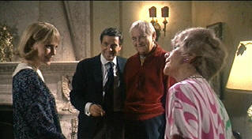

| Rosemary's Baby/A,B |
| Paramount/1968/136/ANA 1.85 |
Turning a seeming everyday situation into an electric horror tale should be considered one of the dark arts. It's not often practiced with great success. When the magic transforms the material the experience can be amazing. And so it with Rosemary's Baby, a grand horror flick in the tradition of gothic fiction. Much of the action is set in a New York apartment building, the Dakota, a perfect city interpretation of the mist shrouded mansions features in many horror films. Eastern European Roman Polanski's first Hollywood film is a paradigm of smart moviemaking. Every aspect of the film, fromt he taut script to the fine production design meshes perfectly into a unified vision.
 |
|
Minnie gets a laugh. ©Paramount |
Rosemary and Guy Woodhouse
seem like any happy, hustling New York couple looking to improve their
lives. When they find a great apartment in a lush old Manhattan building,
things are looking up. Guy's halting acting career winds up getting an
unexpected boost. And their marriage is blessed by more good news,
Rosemary's pregnancy. The natty neighbors, Minnie and Roman Castavet are
horrifyingly friendly. But just when things seem to be going so well,
Rosemary catches a scent of enveloping evil. Details are revealed with such
casual elegance. Rosemary is in such a fright you sometimes wonder if
everything she is feeling and seeing isn't some grand delusion. This is one
term of pregnancy that no one ever forget.
Central to the film is the unnerving performance by
fragile Mia Farrow. From a sunny young pregnant woman we watch Rosemary
unravel into a red-eyed reflection of the horrors she is experiencing. Who
do you turn to? John Cassavetes is good enough as Guy to let his smile
change from natural to twisted in imperceptible steps. Minnie and Roman
Castevet are a perfect pair of older New York characters. Sidney Blackmer's
deep, resonant voice is perfect for Roman Castevet. Every time he addresses
Rosemary the words take on an ominous tone of solicitous evil. Ruth Gordon
is a hoot as Minnie. I wouldn't drink anything concocted by her. Ralph
Bellamy makes a reassuring presence as Dr. Abe Sapirstein and Maurice Evans
provides Hutch with touches of thespian class.
Writer/director Roman Polanski mined the ordinary to
perfection with his first English language* horror classic Repulsion in
1965. Choosing Polanski to direct Rosemary's Baby was an inspiration by then
studio head Robert Evans. Horror schlockmeister William Castle was set to
direct the adaptation of the Ira Levin novel, but Evans recognized that a
different sensibility might make this project something special. Polanski
indeed has a different sensibility. He's a smart director. His choices seem
to make everything better in Rosemary's Baby. While the pace may seem
leisurely at times, the film moves forward with certain horror. The slightly
comic aspects of the Castevets layers a strange veil of horror over their
actions.
The score by Christopher Komeda laying what is
essentially a lullaby over the dark proceedings remains a hauntingly
memorable aspect of Rosemary's Baby. William Fraker's cinematography finds
shadows and angles that emphasize the action.
Source elements for Rosemary's Baby are relatively
clean. Some dirt speckles crop up here and there but are negligible. Cold
shooting style is exacerbated by slightly faded film stock. Color is good
with saturation limited by source. Grain is heavy is some long lens shots,
but otherwise delivered in tight patterns. The transfer is reasonably sharp
throughout. Details are easily picked out in the backgrounds. Shadow detail
is fine and blacks dark and rich. Mono sound is true enough to the original
material. Dialogue is clean, music.
A twenty-plus minute making of featurette from 1968 is
included and adds a nice retrospective dimension to the pleasure of the
film. There are retrospective interviews with Polanski, producer Robert
Evans and production designer Richard Sylbert
*Thanks to Paulo Roberto Elias for correcting my errant reference to Repulsion as a French film. The review body has been corrected according to the email that follows:
"I read with great interest your quite interesting review of Rosemary's Baby. There is however a mistake on your behalf and I quote: "Writer/director Roman Polanski mined the ordinary to perfection with his French horror classic Repulsion in 1965." Actually, Repulsion was made in Britain. It wasn't exactly a horror film but it rather dealt with a schizophrenic woman. Roman Polanski started in movies in his homeland by doing Knife on Water. If memory serves he fled to England to do Cul-de-Sac (one of my favourites), Repulsion and Dance of the Vampires, later renamed as The Fearless Vampire Killers (another one of his brilliant low budget films, which is missing on an decent DVD edition). Rosemary's Baby was his first Hollywood film. At the time it was released, it produced a certain degree of disappointment in most of Polanski's fans and a few critics. The film however is very interesting, and I fully agree with your well written review. Perhaps in later years filmmaker Polanski wasn't the same, but I enjoyed Bitter Moon a lot. I think this is one of his best moments. Not so good was Frantic, but what the heck..."
Selections from the Feature Archive include articles on Akira Kurosawa, Frank Darabont, Blonde Bimbos, Hollywood Street Gangs, or Vietnam: The Hollywood Pariah, and many more....
Body Parts

Hollywood's long fascination with parts of the body is explored piece by piece.

Charade/A,B

Successfully combining romantic comedy and suspense is no small
achievement. Charade does it with panache.

The Movie Poster Archive includes extensive poster images from the films of stars like Susan Hayward, Kirk Douglas, Katharine Hepburn and many more. Our featured star is Frank Sinatra.


Click on the
DVD MIA symbol for profiles of DVDs missing in action.
Add films to the
DVD MIA Master List
by filling out a simple form.
Click Here


ISF Monitor
Calibrations in the Tristate New York area. Lots of hardware info and
frequent hardware peaks from video expert Kevin Miller. They may be
judgmental, but that's the point, isn't it. Lots of DVD reviews plus news
and more.

Specializing in DVD reviews, DVD Authority boasts almost 400 reviews in an
easy to use, elegant, interface.
 Sight and Sound Magazine
is the venerable voice of The British Film Institute. The site includes
articles and film reviews. A great resource in print and on the Internet.
Sight and Sound Magazine
is the venerable voice of The British Film Institute. The site includes
articles and film reviews. A great resource in print and on the Internet.

A love of movies drives this
small DVD production company,
Synapse Films. Currently specializing in horror and cult films. Watch for new
DVD releases of film festival independents as Synapse branches out.